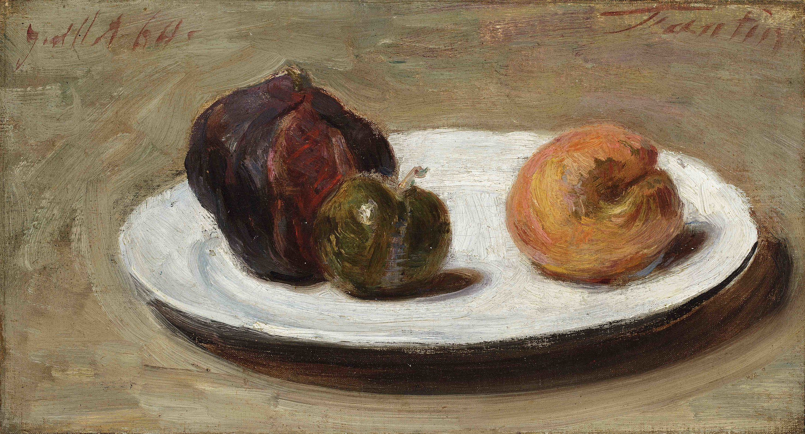

Αδύνατο vs Απίθανο - Μέρος Γʹ#

Ο πίνακας Σύκο, δαμάσκηνο και βερύκοκο του Henri Fantin-Latour.#
Για άλλη μία εβδομάδα θα ασχοληθούμε με την έννοια της πιθανότητας και το πώς αυτή σχετίζεται με αυτό που έχουμε στον νου μας ως αδύνατο. Βασικά, αυτή τη φορά θα πάμε ένα βήμα παρακάτω, καθώς την προηγούμενη εβδομάδα δώσαμε μία αρκετά πειστική απάντηση σε αυτό το ζήτημα - για να θυμηθείτε περισσότερα, δείτε εδώ. Αυτήν την εβδομάδα θα μιλήσουμε για πράγματα που δεν είναι πιθανά, αλλά δεν είναι ούτε… απίθανα.
Πραγματικά αντικείμενα#
Μη σας γελάει η επικεφαλίδα, δε θα ασχοληθούμε με αντικείμενα του φυσικού κόσμου - που δεν ξέρουμε καλά-καλά αν υπάρχει. Μαθηματικά κάνουμε άλλωστε, δεν είναι αυτή η δουλειά μας. Το πιο κοινό και πραγματικό αντικείμενο που έχουμε στα μαθηματικά είναι ίσως οι πραγματικοί αριθμοί, οπότε θα ασχοληθούμε εδώ με μία πολύ απλή ερώτηση: Πώς μοιάζει μία σ-άλγεβρα κι ένα μέτρα πιθανότητας που περιγράφουν «καλά» την επιλογή ενός πραγματικού αριθμού ομοιόμορφα (τυχαία) από το διάστημα \([0.1];\)
Τις προηγούμενες εβδομάδες ασχοληθήκαμε με πειράματα τύχης που είχαν είτε πεπερασμένους δειγματικούς χώρους είτε άπειρους, μεν, αριθμήσιμους, δε. Τώρα ήρθε η ώρα να ασχοληθούμε με μεγαλύτερα σύνολα - ως προς την πληθικότητά τους. Όπως είδαμε και την προηγούμενη εβδομάδα, το να ορίσουμε ένα μέτρο πιθανότητας και μία σ-άλγεβρα στους φυσικούς αριθμούς που να αποτυπώνουν όπως θα θέλαμε την έννοια της «ομοιόμορφης» τυχαιότητας δεν ήταν και τόσο… εφικτό, κυρίως λόγω της ιδιότητας της σ-προσθετικότητας ενός μέτρου πιθανότητας και της αριθμήσιμα άπειρης φύσης του συνόλου των φυσικών αριθμών. Ωστόσο, αυτό δεν θα μας προβληματίσει, αρχικά τουλάχιστον, σε ό,τι έχει να κάνει με τους πραγματικούς αριθμούς.
Πριν από αυτά, ας θυμηθούμε λίγο τι έχουμε ορίσει ως σ-άλγεβρα και τι ως μέτρο πιθανότητας:
Επίσης, ως μέτρο πιθανότητας έχουμε ορίσει το εξής:
Όπως έχουμε πει, η έννοια της σ-άλγεβρας αντιστοιχεί σε αυτήν των ενδεχομένων ενώ η έννοια του μέτρου πιθανότητας σε αυτήν της… πιθανότητας ενός ενδεχομένου. Τώρα, στο πείραμα τύχης κατά το οποίο επιλέγουμε τυχαία (ομοιόμορφα) έναν αριθμό στο διάστημα \([0,1]\) πώς θα μπορούσαμε να καθορίσουμε αυστηρά ένα μέτρο πιθανότητας;
Σαφώς, θέλουμε και πάλι όλα τα μονοσύνολα να έχουν το ίδιο μέτρο πιθανότητας οπότε, λόγω της απειρίας τους θα πρέπει να ισχύει \(p(\{x\})=0\) για κάθε \(x\in[0,1].\) Εντάξει, αυτό δεν ήταν και κάτι που δε θα περιμέναμε, δεδομένων των όσων έχουμε ήδη συζητήσει, αλλά δεν είναι δα και κάτι συνταρακτικό, υπό την έννοια ότι δεν εκμεταλλευόμαστε κάπως την ιδιαίτερη δομή του κλειστού διαστήματος \([0,1]\) αλλά μόνο το γεγονός ότι είναι ένα άπειρο σύνολο.
Όπως και να έχει, ας παρατηρήσουμε ότι αν \(A=\{a_1,a_2,\ldots\}\) είναι ένα αριθμήσιμο σύνολο, τότε από τη σ-προσθετικότητα των μέτρων πιθανότητας παίρνουμε άμεσα ότι:
Όπως θυμόμαστε - αν δε θυμόμαστε, μπορούμε να το θυμηθούμε από εδώ - αυτή ακριβώς η ιδιότητα ήταν που μας οδήγησε σε όλη αυτήν την ταλαιπωρία την προηγούμενη εβδομάδα σε σχέση με τα μέτρα πιθανότητας ορισμένα σε υποσύνολα των φυσικών αριθμών - καθώς η σ-προσθετικότητα σε συνδυασμό με την απαίτηση να έχουμε μία ομοιόμορφη πιθανότητα οδηγούσε σε αντιφάσεις. Εδώ που ο δειγματικός μας χώρος είναι υπεραριθμήσιμος δεν έχουμε κανένα θέμα που κάθε αριθμήσιμο υποσύνολό του αποτιμάται ως απίθανο. Αντιθέτως, αυτό είναι, αν το καλοσκεφτούμε και μία λογική ιδιότητα καθώς ένα υπεραριθμήσιμο σύνολο είναι «απείρως πιο άπειρο» - ένας μαθηματικός, κάπου, πνίγηκε μόλις τώρα - από ένα αριθμήσιμο, οπότε, έχοντας κατά νου την ιδέα ότι η πιθανότητα ενός συνόλου συμπίπτει με την σχετική του συχνότητα στον δειγματικό χώρο, είναι λογικό να περιμένουμε ότι η πιθανότητα να συμβαίνουν αριθμήσιμα ενδεχόμενα είναι 0 όταν ο δειγματικός χώρος είναι υπεραριθμήσιμος.
Μία άλλη εύλογη ιδιότητα που θα θέλαμε να έχει ένα μέτρο πιθανότητας στο \([0,1]\) είναι, αν το καλοσκεφτούμε, η εξής:
Δηλαδή, αν ένα κλειστό διάστημα έχει μήκος 0.4 θα θέλαμε και η αντίστοιχη πιθανότητα ο αριθμός που θα διαλέξουμε από αυτό το διάστημα να είναι 0.4. Γενικότερα, μιας και ένα ανοικτό με ένα κλειστό διάστημα με ίδια άκρα διαφέρουν μόνο ως προς δύο αριθμούς, από το παραπάνω έπεται και ότι:
αφού
Γενικότερα, αν \(I\) είναι ένα οποιοδήποτε διάστημα και \(\ell(I)\) είναι το μήκος του - δηλαδή, η διαφορά των άκρων του - τότε θα θέλαμε το μέτρο μας να ικανοποιεί την εξής ιδιότητα:
Τώρα έχουμε κάτι πιο ζουμερό στα χέρια μας, καθώς από εδώ μπορούμε να βγάλουμε διάφορα ενδιαφέροντα συμπεράσματα για το πώς θα θέλαμε να μοιάζει το μέτρο μας. Αρχικά, έχει νόημα να εξετάσουμε μήπως η κλάση όλων των διαστημάτων - ανοικτών, κλειστών, κλειστάνοιχτων και ανοιχτόκλειστων - είναι μία σ-άλγεβρα. Σε περίπτωση που αυτό ισχύει, αρκεί να εξετάσουμε αν η συνάρτηση \(\ell\) του μήκους ενός διαστήματος είναι ένα μέτρο πιθανότητας και, αν είναι, τότε έχουμε ξεμπερδέψει.
Τίποτα όμως δεν είναι τόσο εύκολο όταν έχουμε να κάνουμε με πραγματικούς αριθμούς. Αρχικά, αν \(I=(0,1)\) τότε \(\Omega\setminus I=\{0\}\cup\{1\}\) που δεν είναι διάστημα ούτε κατά διάνοια, επομένως, όλα τα διαστήματα μαζί δεν φτιάχνουν μία σ-άλγεβρα. Εδώ, λοιπόν, θα κάνουμε ένα τέχνασμα: θα ορίσουμε μία σ-άλγεβρα \(\mathcal{B}\) - έχουμε λόγο που διαλέξαμε Β καλλιγραφικό αντί για Α - η οποία θα είναι τέτοια έτσι ώστε να ικανοποιεί τις εξής ιδιότητες:
περιέχει όλα τα διαστήματα του \([0,1]\)
είναι η μικρότερη δυνατή σ-άλγεβρα ως προς τον εγκλεισμό συνόλων που ικανοποιεί την παραπάνω ιδιότητα.
Λέγοντας μικρότερη εννοούμε ότι αν \(\mathcal{A}\) είναι μία άλλη σ-άλγεβρα που περιέχει όλα τα διαστήματα του \([0,1]\) τότε θα ισχύει \(\mathcal{B}\subseteq\mathcal{A}.\) Πρακτικά, αυτό είναι ισοδύναμο με το να πούμε ότι η \(\mathcal{B}\) είναι η τομή όλων των σ-αλγεβρών που περιέχουν τα διαστήματα που θέλουμε - είναι σχετικά απλό να αποδείξουμε ότι οι τομές σ-αλγεβρών είναι κι αυτές σ-άλγεβρες.
Τώρα, αντί να κάτσουμε να περιγράψουμε ακριβώς ποια σύνολα περιέχει και ποια δεν περιέχει αυτή η σ-άλγεβρα, θα δείξουμε απλώς ότι υπάρχει και θα την εξερευνήσουμε στην πορεία. Βασικά, το να δείξουμε ότι υπάρχει συνίσταται απλά στο να παρατηρήσουμε ότι υπάρχει μία σ-άλγεβρα που περιέχει τα διαστήματα του \([0,1]\) και άρα ότι η παραπάνω τομή έχει νόημα - είναι μη κενή. Το ποια είναι αυτή η σ-άλγεβρα είναι απλό: το δυναμοσύνολο του \([0,1],\) το οποίο είναι σαφές ότι είναι σ-άλγεβρα καθώς και ότι περιέχει και τα διαστήματα που μας αρέσουν.
Τώρα, αφού η \(\mathcal{B}\) είναι σ-άλγεβρα, έπεται ότι εκτός από τα διαστήματα περιέχει και τις αριθμήσιμες τομές τους. Το ίδιο ισχύει και για τις αριθμήσιμες ενώσεις διαστημάτων, όπως επίσης και για τις αριθμήσιμες τομές αριθμήσιμων ενώσεων διαστημάτων, για τις αριθμήσιμες ενώσεις αριθμήσιμων τομών αριθμήσιμων ενώσεων αριθμήσιμων τομών διαστημάτων κ.ο.κ. Επομένως, φαίνεται να περιέχονται πολλά άσχημα πράγματα μέσα στη σ-άλγεβρα που μόλις ορίσαμε - τα σύνολα που περιέχει θα τα αποκαλούμε συχνά και σύνολαBorel. Εύλογα λοιπό, διατυπώνουμε το εξής ερώτημα:
Υπάρχουν σύνολα που δεν είναι Borel;
Κι αν ναι, πώς μοιάζουν; Από την άλλη, αν όχι, πώς μπορούμε να αποδείξουμε ότι κάθε σύνολο στο \([0,1]\) μπορεί να γραφτεί μέσα από αριθμήσιμες πράξεις διαστημάτων;
Ένας άλλος Γάλλος#
Πριν μιλήσουμε για το αν όλα τα σύνολα είναι Borel, θα ασχοληθούμε λίγο και με το μέτρο πιθανότητας που θέλουμε να ορίσουμε. Εδώ θα μας βοηθήσει ένας άλλος Γάλλος μαθηματικός, ο Henri Lebesgue. Όπως είδαμε παραπάνω, έχουμε ορίσει ένα «μέτρο» πιθανότητας μόνο στα διαστήματα του \([0,1]\) και θα θέλαμε κάπως φυσιολογικά να το επεκτείνουμε σε όλη τη σ-άλγεβρα των Borel συνόλων του \([0,1],\) ιδανικά γενικεύοντας κάπως και τις ιδιότητες που ήδη έχει και είναι αρκετά καλές.
Αρχικά, ας πάρουμε την πλέον απλή περίπτωση ενός συνόλου Borel, πέρα από τα διαστήματα, που είναι μία ξένη ένωση διαστημάτων, έστω \(I:=\bigcup_{k=1}^\infty I_k.\) Τότε, το μέτρο αυτής της ένωσης είναι, αρκετά φυσιολογικά:
Δηλαδή, απλώς «προσθέτουμε» τα μήκη των διαστημάτων που έχουμε στη διάθεσή μας. Δεδομένου ότι αυτά είναι ξένα ανά δύο, δεν έχουμε υπολογίσει κάποιο τμήμα από αυτά δύο φορές και άρα πράγματι το «άθροισμα» αυτό αντιστοιχεί στο συνολικό μέτρο της ένωσής τους. Ωστόσο, τι γίνεται με τα σύνολα Borel που δεν μπορούν να γραφτούν με αυτόν τον απλό τρόπο;
Ας πάρουμε ένα σύνολο Borel, έστω \(A\in\mathcal{B},\) και ας πάρουμε και αριθμήσιμα (ίσως άπειρα) στο πλήθος διαστήματα, \(I_1,I_2,\ldots\) έτσι ώστε:
Τώρα, δεδομένου ότι κάθε μέτρο πιθανότητας είναι μονότονο ως προς τη σχέση του εγκλεισμού - δείτε εδώ για περισσότερα - έπεται άμεσα ότι ισχύει το εξής:
Από την άλλη, ακριβώς επειδή δεν γνωρίζουμε αν η ένωση των παραπάνω διαστημάτων είναι ξένη ή όχι, έχουμε και την ακόλουθη ανισότητα:
Τώρα, συνδυάζοντας τις δύο παραπάνω παίρνουμε φυσιολογικά την ακόλουθη ανισότητα:
Έτσι, όποια ένωση διαστημάτων κι αν πάρουμε που να κααλύπτει το \(A\) γνωρίζουμε ότι ισχύει η παραπάνω ανισότητα. Τώρα, το παραπάνω μπορεί να μην είναι μία ακριβής τιμή του μέτρου του \(A,\) αλλά φαντάζει μία καλή αρχή για να προσεγγίσουμε το \(p(A).\) Πράγματι, αν έχουμε την ακόλουθη σχέση:
τότε θα θέλαμε να ισχύει και το εξής:
Ένας τρόπος για να το πετύχουμε αυτό είναι να ορίσουμε το \(p(A)\) για κάθε \(A\in\mathcal{B}\) ως εξής:
όπου με \(\mathcal{I}\) συμβολίζουμε την κλάση όλων των διαστημάτων του \([0,1].\) Με άλλα λόγια, αυτό που κάναμε παραπάνω είναι να ταυτίσουμε το μέτρο του \(A\) με την «βέλτιστη» προσέγγιση που μπορούμε να κάνουμε χρησιμοποιώντας ενώσεις ανοικτών διαστημάτων. Μένει τώρα να αποδείξουμε ότι πράγματι το μέτρο που ορίσαμε παραπάνω - που λέγεται μέτρο Lebesgue - είναι πράγματι ένα… μέτρο.
Υπάρχει;#
Η πρώτη ερώτηση που πρέπει να κάνουμε, πριν αποδείξουμε τις απαιτήσεις του ορισμού, είναι να αποδείξουμε ότι αυτό που ορίσαμε έχει νόημα. Με άλλα λόγια, να αποδείξουμε ότι πράγματι το infimum εκείνων εκεί των πραγμάτων που υπολογίσαμε υπάρχει - και είναι πραγματικός αριθμός. Αυτό σημαίνει ότι πρέπει να αποδείξουμε ότι το σύνολο αυτό:
είναι μη κενό και κάτω φραγμένο. Εντάξει, το ότι είναι μη κενό είναι σχετικά απλό, αφού μπορούμε απλώς να πάρουμε τα διαστήματα \(I_1=[0,1]\) και \(I_2=I_3=\dots=\varnothing,\) οπότε και \(A\subseteq\bigcup_{k=1}^\infty I_k=[0,1]\) και \(\sum_{k=1}^\infty\ell(I_k)=1\) άρα \(1\in X.\) Τώρα μένει να δείξουμε ότι είναι κάτω φραγμένο. Ε, κι αυτό απλό είναι αφού κάθε τι μέσα στο \(X\) είναι μη αρνητικό - ως άθροισμα μη αρνητικών αριθμών. Άρα, πράγματι τα παραπάνω infima υπάρχουν πάντα - για κάθε σύνολο \(A\in\mathcal{B}\) αλλά και για κάθε σύνολο \(A\subseteq[0,1]\) γενικότερα.
Τετριμμένες περιπτώσεις…#
Το επόμενο που θα θέλαμε να αποδείξουμε είναι ότι \(p(\varnothing)=0\) και ότι \(p([0,1])=1.\) Αυτά είναι και τα δύο σχετικά προφανή. Πράγματι, αρχικά, για το \([0,1]\) παρατηρούμε ότι η μόνη επιλογή που μπορούμε να κάνουμε για να καλύψουμε το \([0,1]\) είναι να πάρουμε τουλάχιστον ένα από τα διαστήματα \(I_k\) να είναι το \([0,1].\) Τώρα, για να επιτύχουμε το ελάχιστο δυνατό άθροισμα, η προφανής επιλογή είναι να επιλέξουμε ακριβώς ένα εκ των διαστημάτων να είναι το \([0,1]\) και τα άλλα να είναι όλα κενά, οπότε και έχουμε \(p([0,1])=1,\) όπως το θέλαμε.
Για το κενό θα κάνουμε ένα κόλπο αρκετά σύνηθες στην ανάλυση. Επιλέγουμε ένα \(\varepsilon\in(0,1)\) και τα διαστήματα \(I_1=(0,\varepsilon)\) και \(I_2=I_3=\dots=\varnothing.\) Αυτά σαφώς και καλύπτουν το κενό, ενώ έχουμε:
Τώρα, επειδή το \(p(\varnothing)\) είναι το infimum όλων των «μηκών» των πιθανών ακολουθιών από διαστήματα που μπορεί να σχηματίσουμε, θα πρέπει να ισχύει ότι:
για κάθε \(\varepsilon\in(0,1).\) Επομένως, θα πρέπει να ισχύει και ότι \(p(\varnothing)\leq0.\) Από την άλλη, \(p(\varnothing)\geq0\) εξ ορισμού, άρα \(p(\varnothing)=0\) όπως ακριβώς θέλαμε.
Τώρα αρχίζουν τα δύσκολα…#
Μας έμεινε η σ-προσθετικότητα του παραπάνω μέτρου, που είναι, όπως φαντάζεστε, και η πιο περίπλοκη. Λοιπόν, θέλουμε να αποδείξουμε ότι αν \(A_1,A_2,\ldots\) είναι μία ακολουθία ξένων ανά δύο ενδεχομένων (συνόλων Borel για αυτήν την ανάρτηση) τότε θα ισχύει και ότι:
Αυτό, είναι η αλήθεια, δεν είναι και τόσο εύκολο, όπως θα διαπιστώσουμε ευθύς αμέσως. Αρχικά, ας παρατηρήσουμε ότι έχουμε ήδη «δείξει» ότι το μέτρο Lebesgue είναι σ-προσθετικό αν περιοριστούμε σε διαστήματα μόνο - έπεται άμεσα από τον ορισμό και όσα έχουμε συζητήσει παραπάνω. Μένει, λοιπόν, να ασχοληθούμε με τα υπόλοιπα, πιο ζουμερά, σύνολα Borel. Η αλήθεια είναι όμως ότι πέρα από τη λεκτική περιγραφή «αριθμήσιμες πράξεις με διαστήματα» δεν έχουμε και κάποια καλύτερη περιγραφή τους, οπότε τι μπορούμε να κάνουμε;
[Σκέψεις]
Θα προσπαθήσουμε να αποδείξουμε την ισότητα σε δύο στάδια, αποδεικνύοντας δύο ανισότητες - κλασσική απόδειξη ανάλυσης. Αρχικά θα αποδείξουμε ότι:
Έστω ένα \(\varepsilon>0.\) Θεωρούμε ακολουθίες διαστημάτων \((I_k)_n\) τέτοιες ώστε:
Πρακτικά, επιλέγουμε μία κάλυψη κάθε \(A_k\) έτσι ώστε να έχει συνολικό μέτρο το πολύ \(\varepsilon/2^k\) μεγαλύτερο από το μέτρο του \(A_k.\) Τώρα, όλα τα \(I_{k,n}\) αποτελούν μία αριθμήσιμη συλλογή από διαστήματα που καλύπτει την ένωση \(\bigcup_{k=1}^\infty A_k\) και άρα θα πρέπει να ισχύει:
Ωστόσο, από το δεξί μέλος της παραπάνω σειράς - με την προϋπόθεση ότι η πρώτη σειρά συγκλίνει, αλλιώς είναι προφανής η ζητούμενη ανισότητα - έχουμε:
για το αυθαίρετο \(\varepsilon>0\) που έχουμε επιλέξει. Άρα, τελικά, ισχύει και ότι:
Παρατηρήστε, μάλιστα, ότι στα παραπάνω πουθενά δε χρειάστηκε να επικαλεστούμε ότι τα σύνολά μας είναι ξένα ανά δύο ή Borel, επομένως η ανισότητα αυτή ισχύει γενικά για κάθε σύνολα που μας βολεύουν - ευχάριστο αυτό.
Η ανάποδη ανισότητα έχει να κάνει με εργαλεία που σχετίζονται με αυτά που θα συζητήσουμε την ερχόμενη εβδομάδα οπότε την αφήνουμε ως εκρεμμότητα για τότε.
Borel, Borel, Borel…#
Ας προσπαθήσουμε να σκεφτούμε ένα σύνολο που δεν είναι Borel. Αρχικά, να πούμε ότι ένα μονοσύνολο μπορεί να ιδωθεί ως ένα τετριμμένο κλειστό διάστημα, άρα είναι Borel και άρα είναι Borel και κάθε αριθμήσιμο σύνολο. Επομένως, αν υπάρχει σύνολο που δεν είναι Borel θα πρέπει να είναι υπεραριθμήσιμο. Τώρα, σαφώς ένα σύνολο που δεν είναι Borel πρέπει να έχει κι ένα συμπλήρωμα που δεν είναι Borel καθώς τα σύνολα Borel σχηματίζουν εξ ορισμού μία σ-άλγεβρα - και άρα, αν το συμπλήρωμα ενός συνόλου είναι Borel, τότε είναι και το ίδιο. Συνεπώς, ούτε το συμπλήρωμα του συνόλου που ψάχνουμε - αν υπάρχει - πρέπει να είναι αριθμήσιμο, άρα θέλουμε ένα υπεραριθμήσιμο σύνολο με υπεραριθμήσιμο συμπλήρωμα.
Δουλειά έτσι όμως δεν κάνουμε, γιατί έχουμε πάρα πολλά σύνολα που ικανοποιούν τις παραπάνω προϋποθέσεις. Επομένως, πρέπει κάπως να βάλουμε μία τάξη στις σκέψεις μας. Αρχικά, θα προσπαθήσουμε να βρούμε ένα υποσύνολο του \([0,1]\) που να μην είναι Borel, καθώς το να προσπαθήσουμε να αποδείξουμε ότι όλα τα σύνολα είναι Borel μοιάζει αδιέξοδο - πώς θα ξεκινούσε άραγε μία τέτοια απόδειξη; Επομένως, θα προσπαθήσουμε να βρούμε ένα σύνολο που δεν είναι Borel που θα μας οδηγήσει σε ένα από τα δύο ακόλουθα αποτελέσματα:
να βρούμε πράγματι ένα σύνολο που δεν είναι Borel,
να κάνουμε μία τρύπα στο νερό.
Στη δεύτερη περίπτωση, ελπίζουμε να έχουμε αποκτήσει, τουλάχιστον, κάποια παραπάνω διαίσθηση για το πώς μοιάζει η σ-άλγεβρα των Borel συνόλων.
Λοιπόν, θέλουμε ένα σύνολο που να μη γράφεται σαν αριθμήσιμες στο πλήθος πράξεις από διαστήματα. Επομένως, μπορούμε να φανταστούμε το σύνολο αυτό ως κάτι πολύ «μακρινό» σε σχέση με τα διαστήματα. Για την ακρίβεια, είναι τόσο «μακρινό» που δεν μπορούμε να το «φτάσουμε» αν κάνουμε μόνο αριθμήσιμες στο πλήθος πράξεις με διαστήματα. Δηλαδή, φανταζόμαστε κάπως τα διαστήματα σαν να είναι όλα μαζεμένα σε ένα μέρος, εκεί γύρω τους να ζουν και τα σύνολα Borel και το σύνολό μας, που δεν είναι Borel, να βρίσκεται κάπου μακριά τους, έξω από το χάνι του Borel.
Ωραίες οι αλληγορίες κι όλʹ αυτά, αλλά πώς θα τα κάνουμε τα παραπάνω φορμαλιστικά; Λοιπόν, ένα διάστημα τι είναι; Είναι μία συνεκτική οντότητα, καθώς δεν έχει καμία «τρύπα», υπό την έννοια ότι αν δύο αριθμοί \(x<y\) ανήκουν σε ένα διάστημα \(I\) τότε το ίδιο πρέπει να ισχύει και για κάθε αριθμό \(z\) με \(x<z<y.\) Έτσι, κάτι που είναι «μακρινό» ως προς την έννοια του διαστήματος πρέπει να είναι τέτοιο έτσι ώστε να έχει παντού «τρύπες». Σαφώς, ωστόσο, πρέπει να είναι κι αρκετά μεγάλο έτσι ώστε να είναι άπειρο σύνολο και, μάλιστα, υπεραριθμήσιμο.
Ας πούμε \(E\) αυτό το σύνολο που ψάχνουμε. Τότε, ένας τρόπος για να εξασφαλίσουμε ότι είναι αρκετά τρύπιο αλλά, ταυτόχρονα, όχι και υπερβολικά τρύπιο είναι ο εξής. Θεωρούμε ένα \(x\in E\) και κατασκευάζουμε το σύνολο:
Δηλαδή, το \(Q_x\) περιέχει όλους τους αριθμούς του \([0,1]\) που απέχουν από τον \(x\) κάποια ρητή απόσταση. Αυτοί τώρα είναι άπειροι στο πλήθος, αριθμήσιμοι και πυκνοί - δείτε εδώ για περισσότερα. Απαιτούμε τώρα να ισχύει η εξής συνθήκη:
Δηλαδή, το \(E\) θέλουμε να μην περιέχει κανέναν άλλον αριθμό που να απέχει ρητή απόσταση από τον \(x\) πέρα από το ίδιο το \(x.\) Έτσι, έχουμε δημιουργήσει πολλές μικρές τρυπούλες στο \([0,1].\) Τώρα, αυτό ίσως να μην είναι αρκετό να το απαιτήσουμε μόνο για ένα \(x\) μέσα στο \(E,\) επομένως αυτό που θα θέλαμε θα ήταν να τρυπύσουμε το \(E\) με κάθε τρόπο που μας επιτρέπεται. Δηλαδή, αν έχουμε ένα \(x\in E\) τότε θα θέλαμε να μην είναι κανένα άλλο στοιχείο του \(Q_x\) μέσα στο \(E.\) Με άλλα λόγια, κατά κάποιον τρόπο κατασκευάζουμε το \(E\) ως εξής:
Επιλέγουμε έναν αριθμό \(x\in[0,1]\) και τον βάζουμε στο \(E.\)
«Σβήνουμε» κάθε αριθμό \(xʹ\in Q_x\) από το \([0,1]\) έτσι ώστε να μην μπορούμε να τον διαλέξουμε στο μέλλον.
Επιλέγουμε έναν αριθμό \(y\) από αυτούς που έμειναν.
«Σβήνουμε» κάθε αριθμό \(yʹ\in Q_y\) από το \([0,1]\) και συνεχίζουμε ομοίως μέχρι να «εξαντληθεί» το \([0,1].\)
Τα παραπάνω, σαφώς, δεν είναι αυστηρά διατυπωμένα - αρχικά, γιατί τα βήματα που απαιτούνται για να ολοκληρωθεί το παραπάνω είναι υπεραριθμήσιμα στο πλήθος - αλλά περιγράφουν ένα σύνολο που, τελικά, έχει την ιδιότητα που θέλουμε παραπάνω - είναι διάτρητο, θα λέγαμε - και άρα μπορεί να είναι και αρκετά μακριά από κάθε διάστημα.
Πιο αυστηρά μπορούμε να εργαστούμε ως εξής. Θεωρούμε, αρχικά, τη σχέση ισοδυναμίας
Το ότι είναι σχέση ισοδυναμίας είναι σχετικά εύκολο να το δει κανείς - όπως και το ότι σχετίζεται άμεσα με τα παραπάνω. Με βάση αυτή τη σχέση, θεωρούμε τώρα τις κλάσεις ισοδυναμίας, έστω \(\mathcal{C},\) που επάγει η \(\sim\) στο \([0,1].\) Κάθε κλάση ισοδυναμίας \(C\in\mathcal{C}\) μπορεί να γραφτεί στη μορφή \(Q_x\) για κάποιον αντιπρόσωπό της, έστω \(x\in C.\) Έτσι, έχουμε ότι:
Από το παραπάνω συμπεραίνουμε ότι οι κλάσεις αυτές είναι υπεραριθμήσιμες στο πλήθος, αφού καθεμιά τους είναι αριθμήσιμη και η ένωσή τους δίνει ένα υπεραριθμήσιμο σύνολο - και άρα δε θα μπορούσε να είναι κι αυτή αριθμήσιμη. Θεωρούμε τώρα το σύνολο \(E\) ως ένα σύνολο αντιπροσώπων αυτών των κλάσεων. Δηλαδή, επιλέγουμε από έναν αντιπρόσωπο από κάθε κλάση \(C\in\mathcal{C}\) και όλους αυτούς τους μαζεύουμε σε ένα σύνολο, το \(E.\) Αυτό το σύνολο έχει ακριβώς την ιδιότητα που περιγράψαμε παραπάνω να είναι διάτρητο και έχει επίσης κι άλλη μία ιδιότητα που είναι απίστευτα ενδιαφέρουσα.
Αρχικά, συμβολίζουμε με \(E+x\) το εξής σύνολο:
Το \(\mod 1\) παραπάνω σημαίνει ότι σε περίπτωση που ο αριθμός που έχουμε ξεπερνάει το 1 τότε απλώς αποκόπτουμε το ακέραιο μέρος του. Πρακτικά, το παραπάνω σύνολο είναι το σύνολο \(E\) μετατοπισμένο κατά \(x\) προς τα «δεξιά» - με εισαγωγικά λόγω αυτού του \(\mod 1.\) Είναι εύκολο να παρατηρήσουμε ότι για το μέτρο Lebesgue πουέχουμε ορίσει παραπάνω ισχύει η εξής κομψή και προφανής ιδιότητα:
με την προϋπόθεση ότι τα παραπάνω σύμβολα έχουν νόημα. Το ότι το παραπάνω είναι προφανές είναι… προφανές, αφού κάθε κάλυμμα του \(E+x\) προκύπτει από ένα κάλυμμα του \(E\) αν μετατοπίσουμε όλα τα διαστήματα κατά \(x,\) κάτι που δεν αλλοιώνει το μήκος τους και άρα, τελικά, ούτε και το μέτρο του \(E.\)
Θεωρούμε τώρα τα σύνολα \(E+q\) για κάθε \(q\in\mathbb{Q}\cap[0,1].\) Αυτά τα σύνολα είναι αριθμήσιμα στο πλήθος, το καθένα περιέχει το ίδιο υπεραριθμήσιμο πλήθος στοιχείων και είναι ξένα μεταξύ τους. Το τελευταίο έπεται από τον ορισμό του \(E\) που περιέχει ακριβώς έναν αντιπρόσωπο από κάθε κλάση \(C\) και άρα αν προσθέσουμε σε όλους αυτούς τον ίδιο ρητό παίρνουμε διαφορετικούς αντιπροσώπους από κάθε κλάση.
Τώρα, παρατηρούμε ότι ισχύει και η ακόλουθη κομψή ιδιότητα για τα σύνολα \(E+q:\)
Από την σ-προσθετικότητα του \(p,\) αν υποθέσουμε ότι το \(E\) είναι Borel και άρα το \(p(E)\) έχει νόημα, τότε:
που είναι άτοπο καθώς για να συγκλίνει η τελευταία σειρά πρέπει \(p(E)=0\) και άρα \(1=0\) που δεν ισχύει.
Άρα;#
Παραπάνω κατασκευάσαμε ένα σύνολο το οποίο δεν είναι Borel και άρα δεν έχει νόημα, όπως δείξαμε, να μιλήσουμε για το αν αυτό έχει κάποια πιθανότητα να συμβεί. Με άλλα λόγια, δείξαμε ότι υπάρχουν πράγματα που να μεν δεν είναι πιθανά, αλλά δεν είναι ούτε και απίθανα. Μάλιστα, το παραπάνω σύνολο είναι και αρκετά μεγάλο, καθώς είναι υπεραριθμήσιμο. Ωστόσο, παρά το μέγεθός του, η δομή του είναι τόσο «στριφνή» που δε μας επιτρέπει να μιλήσουμε για την πιθανότητα να συμβεί.
Μήπως όμως έχουμε κάνει κάποιο λάθος; Οι παραπάνω συλλογισμοί μας έχουν αρκετά θολά σημεία. Αρχικά, όπως είδαμε, η έκφραση που καθορίζει το μέτρο Lebesgue έχει νόημα για κάθε σύνολο, απλά δεν φαίνεται να ισχύουν για κάθε σύνολο όλες οι ιδιότητες που θα θέλαμε να έχει ένα μέτρο πιθανότητας - ή τουλάχιστον έτσι θεωρούμε. Έτσι, πριοριστήκαμε στα σύνολα Borel, τα οποία όμως εισαγάγαμε εμείς και άρα υπάρχει το ενδεχόμενο η συνάρτηση \(p\) να μπορεί να ικανοποιεί όλες τις ιδιότητες που θέλουμε και για μία ευρύτερη κατηγορία συνόλων από τη σ-άλγεβρα \(\mathcal{B},\) ακόμα ίσως και για όλα τα υποσύνολα του \([0,1].\) Έτσι, ενδέχεται να μπορούμε να βρούμε μία μεγαλύτερη σ-άλγεβρα που να είναι συμβατή με όσα θέλουμε και η οποία να περιλαμβάνει και το παραπάνω σύνολο \(E.\) Όμως, πού ξέρουμε αν οι παραπάνω συλλογισμοί είναι σωστοί ή λανθασμένοι;
Όλα αυτά θα τα συζητήσουμε, όμως, την επόμενη εβδομάδα. Μέχρι τότε, καλή συνέχεια!